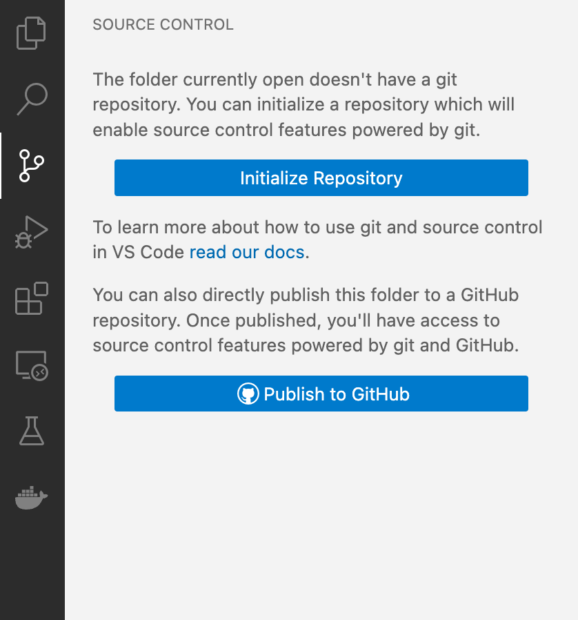
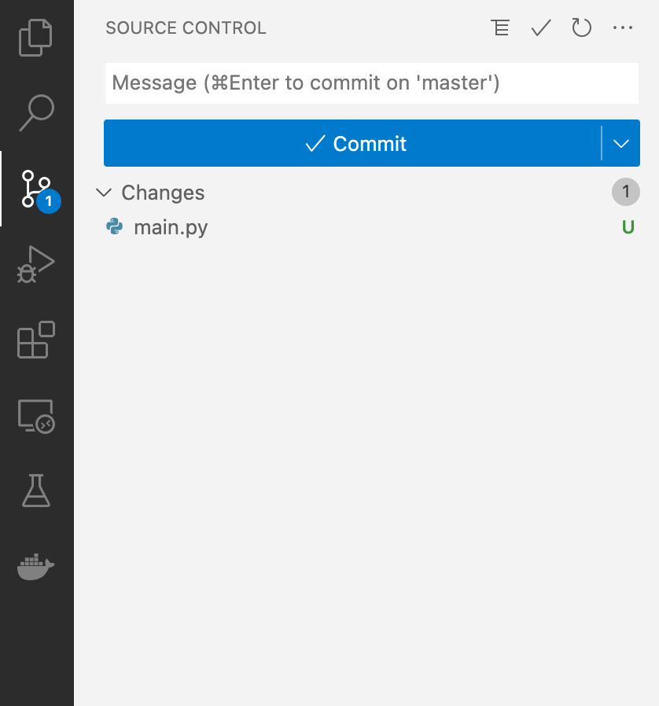
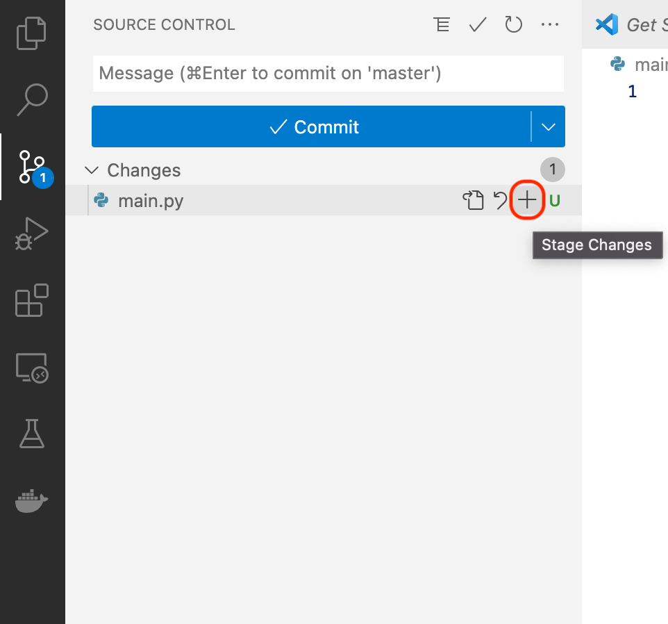
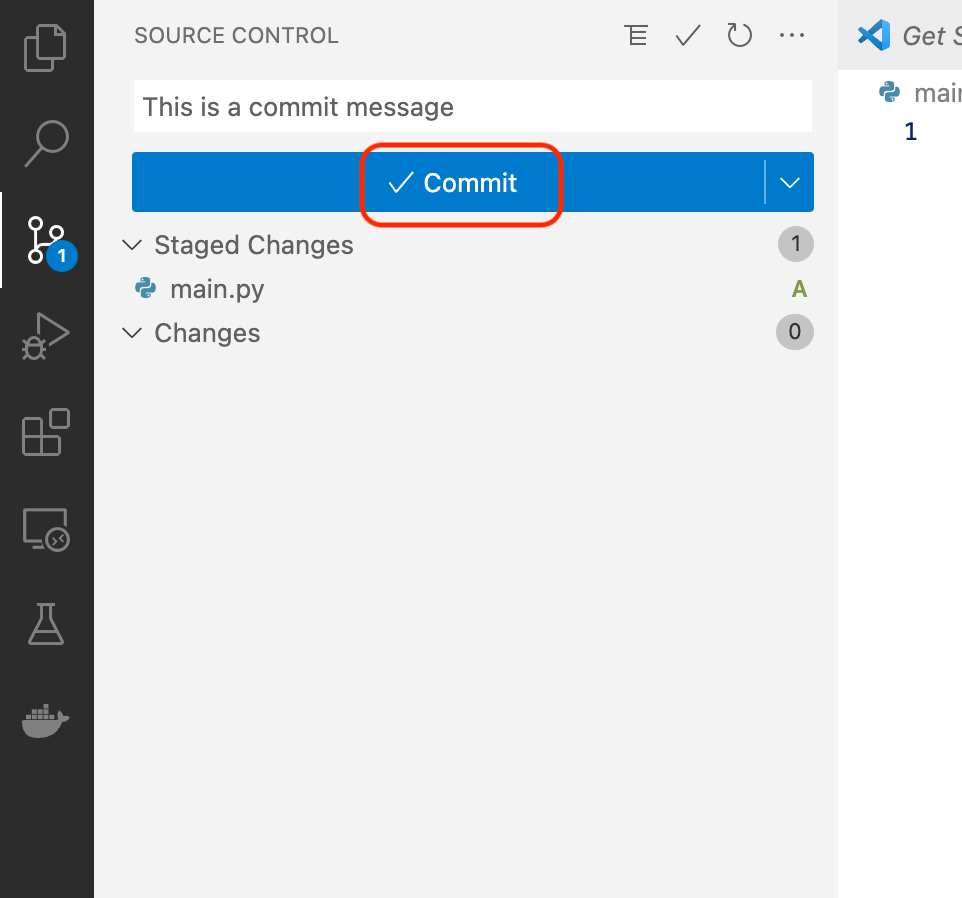
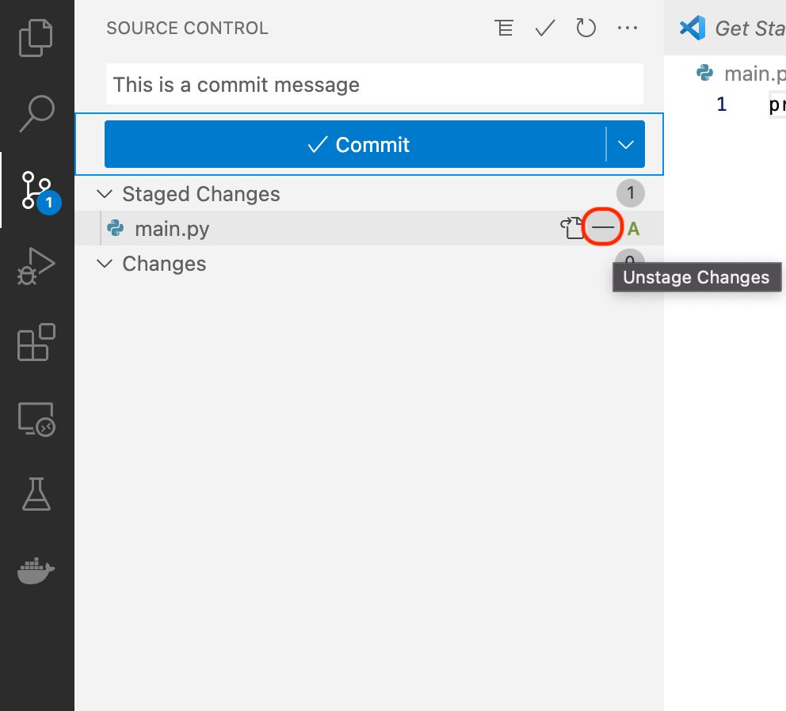
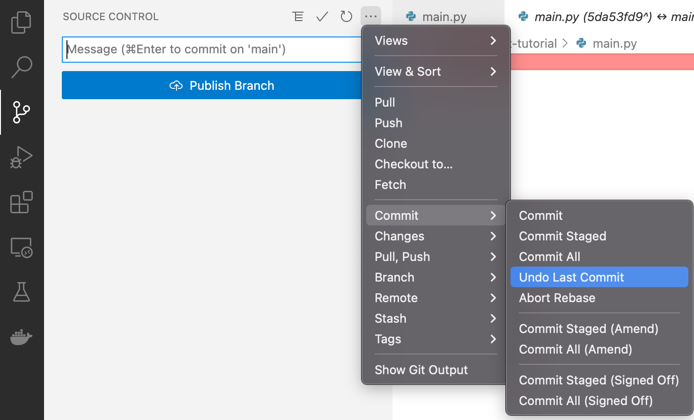
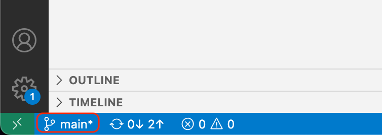

Git
Contents
Git#
Git is the most widely spread version control system. It is mainly used in software development, but can be used for any project in which parallel work is done on text files. Files in a git repository go through three stages before being under version control with git:
Untracked: The file exists, but is not part of git’s version control
Staged: The file has been added to git’s version control but changes have not been are not part of a commit. Commits are a way to structure changes into groups
Committed: The change has been committed
 Source: https://support.nesi.org.nz/hc/en-gb/articles/360001508515-Git-Reference-Sheet
Source: https://support.nesi.org.nz/hc/en-gb/articles/360001508515-Git-Reference-Sheet
Starting a repository#
If you want to start tracking a project with git your initial command will be:
git init
This creates a .git folder which contains everything git needs to track your progress.
In VSCode you can to this by selecting the Source Control menu item on the left side and clicking on “Initialize Repository”.
{kind=link}
You can also start with a preexisting git repository from a git server (e.g., github.com):
git clone <URL>
{kind=link}
Adding changes#
After you created new files or changed existing ones, you want to track these changes. To get an overview of the current state of your repository you can run:
git status
Or simply take a look at the Source Control overview in VSCode:
{kind=link}
Stage local changes#
The add command tells git which folders and files it should add to the staging area:
git add <file>
In Linux the dot always referes to the directory that is currently open. A common practice to add everything is to navigate to the top folder of your repository and run:
git add .
The VSCode Source Control enables your to do this graphically:
{kind=link}
Commit staged changes#
At some point you want to collect your changes to a commit. This is done by:
git commit -m "This is a message"
or in VSCode:
{kind=link}
git generally requires a non-empty message because providing a meaningful commit message is part of good development practice and good repository stewardship. This is particularly useful for others to understand your thought process behind changes as well as for yourself to remember what you did a few months ago. A commit message should be a brief and precise description of which changes your commit contains. If your message too long (> 50 characters) or hard to write, it could worth to reconsider the content of your commit (e.g., divide it into smaller commits). Some examples for good vs. bad commit messages:
Good |
Bad |
|---|---|
resolve import exception |
fix bug |
add reset password menu button |
add new feature |
delete deprecated function |
(no message) |
long lists of changes |
Synchronize commited changes#
At the end of a long day of creating commits, you want to save your progress to a git server to share with your colleagues and to preserve your work.
If you initialized the repository with git init in the begining, the repository only exists locally your current machine. To add it to a git server we have to make a small configuration:
git branch -M main
git remote add origin <URL>
The first command renames the default branch to main. The default git branch name is “master”. In 2020, Github has changed the name to “main”, so we also need to rename our local repository accordingly. The second command configures the desired remote repository. “origin” is the name for the remote repository and can be changed to any other name. However, naming it “origin” is a widely spread convention.
Finally, we can upload the changes with:
git push -u origin main
Notice that we are specifying the remote and branch name. This is only required for the first push. Afterwards, git knows where to push:
git push
Reverting changes#
If you made a mistake, there are several methods to undo your changes depending on the git stage the undesired changes are in.
Undo staged local changes#
In the simplest case the changes are still in your local staging area. To undo them, simply use:
git reset <file>
to unstage a single file or:
git reset
to unstage everything. In VSCode this is done by clicking on the minus sign next to the staged file:
{kind=link}
Undo commited local changes#
If you want to undo the last commit run:
git reset HEAD^1
1 can be replaced with any other integer and specifies how many commits git should go back.
The VSCode UI also offers an option to undo your last commit:
{kind=link}
Branches#
Branching allows multiple programmers to work on the same repository without getting in the way of each other. For instance, if two developers want to add different features to the same website, both create a copy (or branch) of the current source code to work independant of each other. After they are done, they merge their branches back together. This prevents them from overriding each other’s work.
Until now we only worked with git’s default branch. However, we suggest that each team member creates their own branch to allow parallel work.
The following command creates a new branch:
git branch <branch_name>
The equivalent way of doing this in VSCode is the branch selection in the bottom left corner:
{kind=link}
This also enables you to switch between branches.
Switching in the terminal is done with the checkout command:
git checkout <branch_name>
Exclude files from tracking#
Usually you want to only track source code, configurations and documentation. Thinks you don’t want to track include:
Datasets
OS generated files
IDE files (e.g., .vscode)
Files generated by the compiler (e.g., __pycache__)
To address this, you can specify a blocklist in a file called .gitignore. A good starting point is the official .gitignore file from GitHub. It already contains all common language specific file. More information is given in the official documentation.